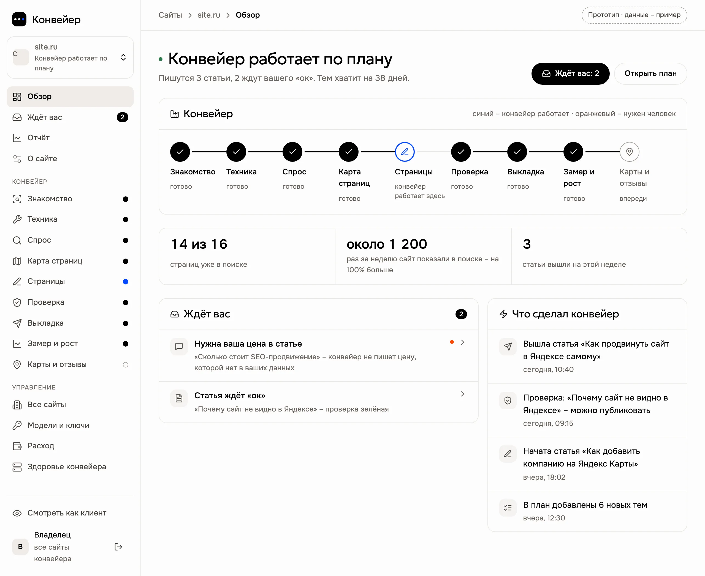
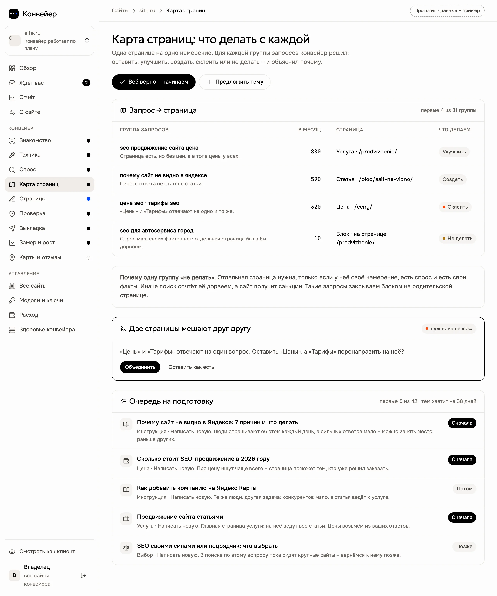

Глава 42. Контент-конвейер на нейросетях: как он устроен изнутри
Вывод. Наш конвейер – это девять станций по порядку: знакомство с бизнесом, техника, спрос, карта страниц, написание, проверка, выкладка, замер и рост, карты и площадки. У каждой станции один вход, один выход и один ответственный, и страница не идёт дальше, пока выход предыдущей станции не принят. Нейросеть работает почти на каждой станции, но решает на трёх из них человек: что считать фактом, какие страницы делать и что выкладывать. «Напиши сто статей» проигрывает такому порядку не скоростью, а тем, что пропускает первые четыре станции, на которых решается, что вообще стоит писать.
Ситуация. Типичная история: владелец сервиса по ремонту техники посмотрел ролик «контент на автопилоте», подключил нейросеть к сайту и поставил задачу: три статьи в день по списку тем, который она сама и придумала. Что пошло не так. Через два месяца на сайте полторы сотни статей. Треть отвечает на один и тот же вопрос разными заголовками. В двадцати названы цены, которых в прайсе нет. Половина не попала в индекс, потому что на сайте не было карты сайта, а старые страницы услуг так и остались без цен. Заявок не прибавилось. Писать нейросеть умела; не было ничего до и ничего после. Вопрос главы. Из каких станций состоит контент-конвейер, что у каждой на входе и на выходе, что делает нейросеть, что программа, что человек и почему порядок станций нельзя сокращать.
В главе 29 мы показали принципы работы с нейросетями и короткую таблицу станций. Здесь разбираем то же изнутри: как идёт работа у нас в студии, на что похожи документы каждой станции и где конвейер останавливается и ждёт человека.
Схема: девять станций и возврат слабых страниц
1 Знакомство -> 2 Техника -> 3 Спрос -> 4 Карта страниц
досье и сайт запросы запрос -> страница:
база фактов исправен и выдача оставить, улучшить,
| создать, склеить, не делать
| факты |
v v
5 Написание -> 6 Проверка -> 7 Выкладка -> 8 Замер и рост
по брифу, отдельно по "да" индекс, показы,
только из от автора человека места, заявки
базы фактов |
^ |
+------ слабые страницы возвращаются -------+
в карту страниц (станция 4)
9 Карты и площадки: те же факты уходят за пределы сайта
(карточки, отзывы, материалы для площадок)
[ч] человек решает на станциях 1, 4 и 7; на 6 - если проверка красная

На снимке видно главное свойство конвейера: в любой момент понятно, на какой станции сайт, что уже сделано и что ждёт человека. Синяя станция – там сейчас идёт работа. Справа – журнал того, что сделано за последние дни, слева – очередь вопросов к владельцу.
1. Конвейер – это девять станций, у каждой свой вход, выход и ответственный
Зачем делить на станции
Причин три, и все они практические.
Брак виден там, где он возник. Если страница вышла с выдуманной ценой, виновата не «нейросеть вообще», а конкретная станция: либо в базе фактов не было цены, либо автор её не использовал, либо проверка пропустила. Чинится одна станция, а не весь процесс.
Работу можно остановить и продолжить. Владелец неделю не отвечает на вопросы о ценах – стоит одна станция и только те страницы, которым нужны эти цены. Остальное движется.
Каждой станции – свой исполнитель. Короткая задача с понятным выходом нейросети по силам; длинная «сделай всё» – нет (глава 29). Где результат можно проверить формально, работает программа. Где нужно решение, стоит человек.
Вход и выход каждой станции
| № | Станция | На входе | Что происходит | На выходе | Кто делает | Кто принимает |
|---|---|---|---|---|---|---|
| 1 | Знакомство | Адрес сайта, прайс, ответы владельца | Чтение сайта и карточек, сбор фактов, вопросы о том, чего нет | Досье: паспорт бизнеса, база фактов, список «чего не говорим» | Нейросеть | Владелец |
| 2 | Техника | Сайт | Проверка индекса, зеркал, карты сайта, скорости, доступа для роботов | Список неисправностей и исправленный сайт | Программа, специалист | Специалист |
| 3 | Спрос | Досье, регион | Сбор и чистка запросов, группировка, просмотр выдачи | Группы запросов с частотой, намерением и типом страниц в топе | Нейросеть, программа | Специалист |
| 4 | Карта страниц | Группы запросов, список страниц сайта | Сопоставление «запрос → страница», поиск дублей | Таблица решений по каждой группе и очередь на подготовку | Нейросеть, программа | Человек |
| 5 | Написание | Строка карты, досье, выдача | Бриф, структура, текст по блокам, мета-теги, ссылки | Черновик страницы | Нейросеть | – |
| 6 | Проверка | Черновик, база фактов, соседние страницы | Набор проверок, каждая с результатом «прошла» или «нет» | Зелёный черновик или список замечаний | Программа, отдельная нейросеть | Человек, если есть красное |
| 7 | Выкладка | Проверенная страница, «да» человека | Публикация, контроль живого адреса, сообщение поисковикам | Страница на сайте, запись в журнале | Программа | Человек даёт «да» |
| 8 | Замер и рост | Данные кабинетов по страницам | Индекс, показы, места, заявки; решение по каждой странице | Список «держим, дожать, ждём, склеить» | Программа, нейросеть | Специалист |
| 9 | Карты и площадки | Досье, вышедшие страницы, случаи из практики | Сверка карточек, ответы на отзывы, материалы для площадок | Пакеты к публикации, реестр размещений | Нейросеть готовит, человек публикует | Человек |
Правило движения одно: станция не начинает работу, пока не принят выход предыдущей. Нет досье – не пишем. Нет карты страниц – не пишем. Проверка красная – не выкладываем.
2. Первые четыре станции решают, что писать
На эти станции уходит заметная часть времени первого месяца, и именно их пропускает «автопилот». Здесь почти нет готовых текстов, зато появляется то, без чего тексты бесполезны.
Станция 1. Знакомство: досье и база фактов
Нейросеть читает сайт компании целиком, её карточки на картах и отзывы и собирает три документа.
Паспорт бизнеса. Что за компания, для кого, как устроена работа: принимает клиентов по адресу, выезжает или работает через интернет. От типа зависит всё дальнейшее: местной компании нужны карты и страницы «услуга в городе», сервису по всей стране – нет.
База фактов. Таблица, из которой автор потом берёт цифры. Кроме неё – ниоткуда.
| Факт | Значение | Источник | Состояние |
|---|---|---|---|
| Диагностика | бесплатно при ремонте, иначе 500 ₽ | прайс на сайте | подтверждён |
| Гарантия на работы | 6 месяцев | ответ владельца | подтверждён |
| Срок ремонта | 1–3 дня | страница услуги | проверить до 1 июня |
| Выезд мастера | по городу, от 700 ₽ | анкета | подтверждён |
| Число выполненных ремонтов | нет данных | – | вопрос владельцу |
У каждого факта есть источник и состояние. «Проверить до…» – для того, что устаревает: цены, сроки, акции. Когда дата подходит, факт возвращается владельцу с вопросом «всё ещё так?».
Список «чего не говорим». Обещания, которых компания не даёт («починим за час», «самые низкие цены»), темы, которых не касаемся, слова, запрещённые законом о рекламе для этой ниши.
Чего на сайте не нашлось, конвейер спрашивает у владельца. Вопросы устроены так, чтобы на них можно было ответить за минуту:
| Плохой вопрос | Вопрос, как он задаётся у нас |
|---|---|
| «Расскажите о ваших ценах» | «Сколько стоит замена экрана у телефона? Зачем спрашиваем: люди ищут цену, страница без неё проигрывает тем, где она есть. На сайте цены нет. Предлагаем написать „от 2 500 ₽“ – это так?» и кнопки «да», «поправить», «не знаю» |
Вопросов немного: только о том, чего нет в открытых источниках и без чего страницы не написать. Последний шаг станции – честная оценка «стоит ли продвигать и с чего начинать»: если за главные запросы ниши бьются крупные сети, начинаем с соседних тем и редких вопросов, где выйти на первую страницу реально за недели, а не за год.
Досье принимает владелец. Это первое из трёх человеческих решений.
Станция 2. Техника: сначала исправный сайт
Вторая станция идёт до спроса и текстов по простой причине: новые страницы на неисправном сайте не помогут. Программа проверяет то, что описано в главах о технике (глава 11, глава 13, глава 14):
- открывается ли сайт и по одному ли адресу;
- не закрыты ли разделы от роботов, включая роботов нейросетей;
- есть ли карта сайта и верна ли она;
- сколько страниц в индексе против числа страниц на сайте;
- нет ли битых страниц, дублей, цепочек перенаправлений;
- как быстро сайт грузится на телефоне.
Выход станции – короткий список в три столбца: что не так, чем грозит, кто чинит. Часть конвейер чинит сам (карта сайта, уведомление поисковиков), часть уходит разработчику. Пока в списке есть пункты «мешает индексации», станции 5–7 ждут.
Станция 3. Спрос: запросы и выдача по каждому
Запросы собираются из нескольких мест: Вордстат по региону компании, подсказки поиска, запросы из Вебмастера и Search Console, по которым сайт уже показывается, вопросы клиентов из досье (глава 6). Нейросеть чистит список от чужих городов, чужих товаров и мусора и раскладывает по слоям:
| Слой | Что в нём | Какая страница обычно нужна |
|---|---|---|
| Главные запросы | Человек готов заказать: «цена», «заказать», «рядом» | Страница услуги с ценой |
| Вопросы об услуге | Человек выбирает, кому доверить | Статья с ответом в первом абзаце, ведёт к услуге |
| Соседние темы | Те же люди, другая задача | Статья; берём только те, что ведут к услуге |
| Редкие вопросы | Точные, узкие, конкурентов мало | Короткая инструкция |
Отдельный шаг, который нельзя доверить воображению нейросети: по каждой группе программа открывает живую выдачу и записывает, что в топе – страницы услуг, статьи, каталоги или агрегаторы (глава 7). Тип будущей страницы берётся из выдачи, а не из головы модели.
Станция 4. Карта страниц: одна страница на одно намерение
Здесь каждая группа запросов получает страницу и решение. Решений пять:
| Решение | Когда | Пример |
|---|---|---|
| Оставить | Страница есть, стоит хорошо | Не трогаем, наблюдаем |
| Улучшить | Страница есть, но слабее топа | «Страница услуги без цен, а в топе цены у всех» |
| Создать | Спрос есть, страницы нет | «Своего ответа нет, в топе статьи» |
| Склеить | Две страницы отвечают на одно и то же | «Цены» и «Тарифы»: оставить одну, со второй поставить перенаправление |
| Не делать | Спрос мал или своих фактов нет | Закрыть блоком на родительской странице |

На снимке видны три вещи, ради которых существует эта станция. Первая: у каждого решения написано «почему» – одной строкой, понятной владельцу. Вторая: решение «не делать» стоит в таблице наравне с остальными. Отдельная страница под запрос с десятью показами в месяц и без своих фактов была бы дорвеем (глава 10), и конвейер должен уметь отказаться от неё сам. Третья: когда две страницы мешают друг другу, конвейер не склеивает их молча, а спрашивает.
Карту программа проверяет на дубли: нет ли двух строк с одним намерением, не занят ли адрес, не пересекается ли новая тема с уже вышедшей. После этого карту утверждает человек – это второе человеческое решение и самое дорогое по последствиям. Ошибка здесь размножается: неправильная карта даёт сотню правильных по форме и ненужных по сути страниц.
Из утверждённой карты получается очередь на подготовку с порядком «сначала, потом, позже». Вперёд идут страницы, которые ближе к деньгам и где проще выйти в топ.
3. Следующие три станции делают страницу: написание по шагам, отдельная проверка, выкладка с контролем
Станция 5. Написание
Одна страница – это не один запрос к нейросети, а цепочка коротких шагов. У каждого своя инструкция и свой результат.
- Бриф. По выдаче: что есть на страницах топ-5 – блоки, вопросы, таблицы, цены, объём (глава 15). Плюс строка карты и нужные факты из базы.
- Структура. Заголовки и порядок блоков. Ответ на главный вопрос – в первом абзаце.
- Текст по блокам. Каждый блок пишется отдельно, с фактами под него. Автор берёт цифры только из базы фактов.
- Мета-теги и разметка. Заголовок страницы, описание, структурированные данные по видимому содержимому.
- Ссылки. С какой страницы на эту и с этой на какие: на услугу, к которой ведёт статья, и на соседние вопросы.
Что происходит, когда факта нет. Автор не придумывает и не пропускает молча, а ставит пометку прямо в текст: «стоит от [цена – ждёт ответа владельца]». Страница с пометкой дальше не идёт, а владельцу уходит вопрос. Так выглядит главное правило конвейера в действии: нет факта – пометка и вопрос, а не выдумка.
Чего автор не делает: не выбирает тему (её дала карта), не решает, выкладывать ли страницу, и не проверяет сам себя.
Станция 6. Проверка
Проверка отделена от написания: её делают программы и другая нейросеть с инструкцией «найди ошибки». Проверок больше десятка – от фактов и похожести на соседние страницы до вида на телефоне. Каждая даёт «прошла» или «не прошла» с объяснением. Устройству этой станции, тому, что ломалось без неё, и роли человека посвящена вся глава 43.
Станция 7. Выкладка: страница должна доехать
Выкладка – не нажатие кнопки, а пять шагов с контролем.
| Шаг | Что делается | Что проверяется |
|---|---|---|
| 1. Разрешение | Человек говорит «да» этой странице или партии | Без «да» выкладка не начинается |
| 2. Публикация | Страница появляется на сайте | Адрес свободен, совпадает с картой страниц |
| 3. Контроль живого адреса | Программа открывает страницу как посторонний посетитель | Код ответа 200, текст на месте, заголовок и описание те же, что в черновике, страница не закрыта от индексации |
| 4. Карта сайта и дата | Страница добавлена в карту сайта с честной датой изменения | Дата меняется только при настоящей правке |
| 5. Сообщение поисковикам | Адрес отправлен через IndexNow, карта сайта обновлена в кабинетах | Запрос принят; через несколько дней – зашёл ли робот (глава 14) |
Третий шаг появился из опыта. «Опубликовано» в системе управления сайтом и «открывается у посетителя» – разные события: страница может остаться черновиком, отдать ошибку или оказаться закрытой служебным тегом. Пока программа не увидела живую страницу, в журнале она не считается вышедшей.
Темп выкладки задаётся заранее и остаётся ровным: например, три страницы в неделю. Сотня страниц в один день для молодого сайта – подозрительный сигнал, а для нас ещё и потеря контроля: если в партии системный брак, он уже на сайте.
4. Последние две станции замыкают круг: замер возвращает слабые страницы в карту, а площадки разносят факты за пределы сайта
Станция 8. Замер и рост
У каждой вышедшей страницы есть строка с цифрами: в индексе ли она в Яндексе и Google, места по своим запросам, показы и переходы за неделю, заявки. Данные приходят из Вебмастера, Search Console и Метрики (глава 23). По ним каждой странице ставится одно из четырёх решений:
| Решение | Признак | Что дальше |
|---|---|---|
| Держим | Страница в первой десятке, есть переходы и заявки | Наблюдаем, обновляем факты |
| Дожать | Места 6–20, показы есть, переходов мало | Возврат в карту с задачей: чего не хватает против топа (глава 25) |
| Ждём | Страница вышла недавно | Не трогаем две-четыре недели |
| Склеить или убрать | Не в индексе, или поиск считает дублем, или две страницы меняются местами по одному запросу | Возврат в карту с вопросом человеку |
Слова «возврат в карту» – ключевые. Конвейер – не прямая линия от темы до публикации, а круг: слабая страница снова становится строкой карты с решением «улучшить» и конкретной причиной. Улучшение проходит те же станции, что и новая страница. И дату на странице мы меняем только вместе с новыми фактами: смена даты без правки по существу – обман, который поисковики замечают.
Эта же станция наблюдает за уже вышедшим: если на странице пропал заголовок, изменилась цена или исчез блок, человек получает вопрос «так и должно быть?».
Станция 9. Карты и площадки
Те же факты из досье должны совпадать за пределами сайта. Станция делает три вещи:
- сверяет карточки на картах и в справочниках с эталоном: название, адрес, телефон, часы (глава 21);
- готовит черновики ответов на отзывы;
- из вышедших страниц и случаев практики собирает материалы под площадки – для каждой свой, по правилам этой площадки (глава 40).
Автоматической публикации здесь почти нет, и это не недоработка. У большинства площадок нет открытого способа публиковать программой, а некоторые прямо запрещают тексты нейросетей. Поэтому выход станции – пакет: текст, фото, ссылка с меткой, подсказка, куда нажать. Публикует человек, а размещение попадает в реестр с проверкой через 7, 30 и 90 дней.
Кто что делает
| Нейросеть | Программа | Человек | |
|---|---|---|---|
| Что умеет лучше всех | Читать, сводить, писать черновики, формулировать вопросы | Считать, сравнивать, проверять по правилу, делать одно и то же без усталости | Знать правду о бизнесе и отвечать за решение |
| Что делает на конвейере | Досье, чистка и группировка запросов, брифы, тексты, черновики ответов, пояснения «почему» | Сбор данных из кабинетов, проверка дублей и похожести, контроль живого адреса, замеры | Подтверждает факты, утверждает карту страниц, даёт «да» на выкладку, публикует на площадках |
| Чего ей не поручаем | Решать, что является фактом; проверять собственный текст; выкладывать | Оценивать смысл и пользу | Рутину, которую можно проверить правилом |
Почему конвейер, а не «напиши сто статей»
| «Напиши сто статей» | Конвейер | |
|---|---|---|
| Откуда темы | Нейросеть придумывает | Из спроса и выдачи, через карту страниц |
| Откуда факты | Из «среднего по интернету» | Из базы фактов с источником |
| Что с существующими страницами | Ничего | Улучшить, склеить, оставить – решено по каждой |
| Дубли | Появляются сами | Отсекаются на карте и на проверке |
| Что после публикации | Ничего | Контроль адреса, замер, возврат слабых |
| Что видно владельцу | Число статей | Станция, очередь, вопросы к нему, цифры по страницам |
| Чем кончается | Сотни страниц, часть вне индекса, заявок нет | Меньше страниц, каждая со своим запросом и цифрами |
Скорость письма у обоих подходов одинаковая. Разница в том, что конвейер тратит первые недели на вопрос «что писать», а потом каждую неделю отвечает на вопрос «сработало ли».
С чего начать у себя
Для малого бизнеса конвейер не обязан быть программой. Его первую версию можно собрать в таблицах:
- Лист «База фактов»: факт, значение, источник, дата проверки.
- Лист «Карта страниц»: группа запросов, частота, страница, решение, почему.
- Лист «Журнал»: страница, дата выкладки, проверен ли живой адрес, индекс, места, показы, заявки через месяц.
- Правило: нейросети даём одну строку карты и нужные факты, а не «напиши про наш бизнес».
- Правило: проверяет не тот, кто писал, и выкладывает человек.
Десять-двадцать страниц, прошедших такой путь, покажут, на какой станции у вас брак. После этого есть смысл что-то автоматизировать.
Как правильно: чек-лист
- [ ] До первого текста собраны досье и база фактов с источником у каждого факта.
- [ ] Вопросы владельцу – только о том, чего нет в открытых источниках, с объяснением «зачем» и предложенным ответом.
- [ ] Техника проверена и исправлена до написания страниц.
- [ ] Запросы сгруппированы, по каждой группе просмотрена живая выдача.
- [ ] У каждой группы в карте страниц – решение из пяти и причина одной строкой.
- [ ] Карту утвердил человек; программа проверила её на дубли.
- [ ] Страница пишется шагами; цифры – только из базы фактов; нет факта – пометка и вопрос.
- [ ] Проверку делает не автор.
- [ ] Выкладка – по «да» человека, с контролем живого адреса и ровным темпом.
- [ ] У каждой вышедшей страницы есть строка с индексом, местами, показами и заявками.
- [ ] Слабые страницы возвращаются в карту с причиной.
- [ ] Материалы для площадок публикует человек, размещения ведутся в реестре.
Частые ошибки
- Начинают со станции 5 – тексты есть, а кому и зачем, никто не решал.
- База фактов «в голове у владельца» – нейросеть заполняет пустоты выдумкой.
- Вопросы владельцу анкетой на сорок пунктов – ответа не будет никогда.
- Тип страницы выбирает нейросеть, а не выдача – статья там, где в топе страницы услуг.
- В карте нет решения «не делать» – под каждый запрос появляется страница, сайт обрастает дорвеями.
- Старые страницы не трогают, пишут только новые – улучшение существующей часто даёт больше.
- «Опубликовано» принимают за «открывается» – страницы висят черновиками и отдают ошибки.
- Сто страниц в день – брак размножен раньше, чем замечен.
- После выкладки страницу никто не смотрит – слабые копятся, сильные устаревают.
- Дату обновляют без правки по существу – поисковик перестаёт верить датам сайта.
Где мнения расходятся
- Сколько станций нужно. На рынке есть конвейеры из одиннадцати этапов и из шести, с восемнадцатью проверками и с пятью. Число – вопрос удобства. Важно, чтобы были четыре вещи: факты из источников, карта «запрос → страница», проверка отдельно от автора и замер после выкладки.
- Статьи или страницы услуг. Многие конвейеры выпускают только информационные статьи: их проще генерировать. По нашему опыту и по наблюдениям практиков, улучшение страниц услуг и категорий обычно ближе к заявкам. Мы начинаем с них, а статьями закрываем вопросы вокруг.
- Нужен ли человек на карте страниц. Сторонники полной автоматики считают, что программа сама найдёт дубли. Она действительно находит похожие формулировки, но не знает, какая из двух страниц важнее для бизнеса. Поэтому решение о склейке у нас за человеком.
Что раскрыть дальше
- Глава 29. SEO с нейросетями и агентами – принципы, на которых построен конвейер.
- Глава 9. Карта сайта под спрос: когда запросу нужна своя страница – логика станции 4.
- Глава 10. Не дорвеи и не каннибализация – почему «не делать» и «склеить» – полноценные решения.
- Глава 14. Обход и обновление: как сообщать поисковику о новом – что происходит на выкладке.
- Глава 25. Рост действующего сайта: позиции 6–10 дороже новых статей – решение «дожать».
- Глава 40. Как делается площадка: от профиля до материала – станция 9 подробно.
- Глава 43. Контент-конвейер: проверки, человек и результат – станция 6, стоп-кран и честный разговор о результатах.